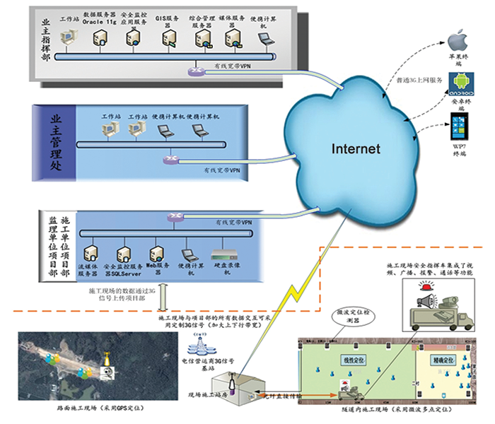

高速公路建设期施工监控与安全管理系统
高速公路建设具有工程施工点多、线长、工地分布地理位置较偏僻、交通不便、参建单位多等典型特征，在施工监控和安全管理方面存在众多问题。高速公路建设期施工监控与安全管理系统以现代系统化管理、整合理论和控制理论为指导，在充分考虑企业现有资源条件约束的情况下，借助信息化技术，对工程建设质量及安全进行高效的监控和管理，对高速公路可能发生的事故加以科学分类，建立突发事件的预防预警体系，加强对重大危险源的监控，加强对应急预案的演练，进行事前应急防范；管理信息的互通可以形成一个上下协同、信息共享、动态监督的安全管理网络办公平台，用网络化的手段实现日常管理，整合应急处置处理力量，确保工程项目建设的质量和安全。
以信息化科技手段打造“平安工地”
加大工程施工过程及质量监管力度，提高施工进度，保证工程质量

线路、施工点、管理处位置信息
施工人员及车辆GPS位置信息
外场监控设备位置信息以及施工点气象信息
实时高清视频监控
视频备份稽查
移动侦测报警
媒体共享分发3G移动浏览
人员实时定位
人员移动轨迹记录
禁区闯入报警
酒精测试仪
指纹识别仪

粉尘浓度监测
可燃气体的浓度监测
温度、湿度监测
信号稳定音质好
数字信号无啸叫音
可同时听和讲
高达130万像素，清晰记录施工细节
广角可控拍摄，减少摄像枪数量
IP数字化传输，优化图像质量
国际标准H.264压缩技术，低带宽传输
高质量压缩，节约存储空间
在无线覆盖范围内可实时定位无延时
定位精度高达1-3米
低功耗，电池可持续使用2-3个月
组网方便，灵活，范围可扩展性大
防暴安全设计，适合隧道施工现场
管理国家、厅、集团、二级单位下发的有关安全的法律、法规、操作规程以及安全相关的其它文件。
应急预案，是针对可能发生的事故，为迅速、有序地开展应急行动而预先制定的行动方案。应急预案实际上是标准化的反应程序，以使应急救援活动能迅速、有序地按照计划和最有效的步骤来进行。在事件/事故发生前，通过危害辨识与风险评估提前预测事件/事故发生的可能性，从而先期制定措施，控制危害，降低风险，避免意外的发生，从而实现“零意外”。
对业主、监理、施工单位进行有关安全施工及应急救援的三级培训，宣传安全防护知识，建立完整的安全培训档案。
通过应急演练检验应急预案的实用性和可操作性，锻炼应急抢险队伍，提高员工对突发事件快速应对效率，同时磨合政企联动机制，强化政企单位之间区域性应急合作效率。
管对各类安全与应急物资进行标准化分类，建立安全应急设备库、专家库等资源，及时掌握资源的状况，为应对事故提供资源保障。
对施工合同、施工计划中是否包含安全施工或者安全检查等规定，并根据合同制订安全措施和实施计划。
实现安全作业许可管理信息的集中管理： 许可申请、审批、作业许可延期申请、作业监护、关闭记录等。
对危险源进行识别并制定相关措施，以减少危险源对人员健康、安全和环境的破坏
安全检查是安全管理工作的重要内容，是消除隐患，防止事故发生的重要手段。安全检查发现施工过程中存在的安全隐患，对隐患进行整改，跟踪整改的落实整改情况。
发生安全事故后，系统提供快速发现的手段，并能快速响应，根据安全预案自动生成处置流程、对发生事故的现场信息全面掌握，协调消防、医院、政府等单位，有条不紊的开展事故的处置。
对事故所造成的损失、资源的消耗情况等进行及时、准确的现场记录和分析，对每次事故的应急的处置过程信息、分析报告、调查报告、经验教训总结等进行管理。
对物资储备情况、危险源分布、安全检查情况等进行统计，对事故发生的严重程度、人员伤亡、经济损失等数据进行统计，为管理决策提供依据。
2015 © 河南祯祥智能工程有限公司. ALL Rights Reserved.